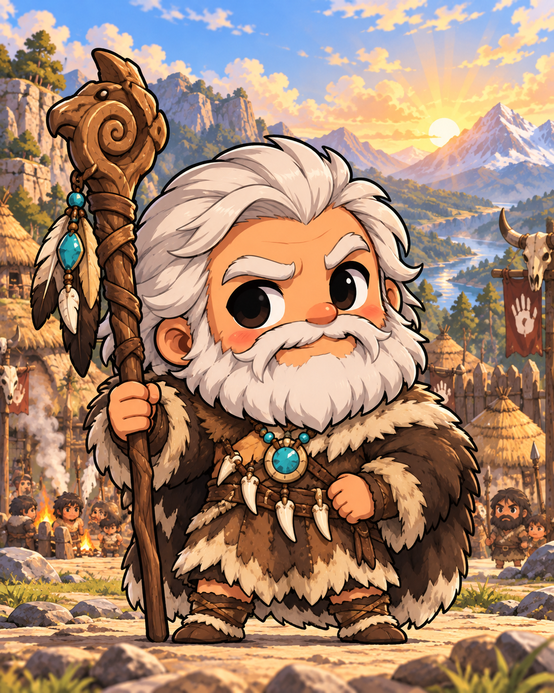
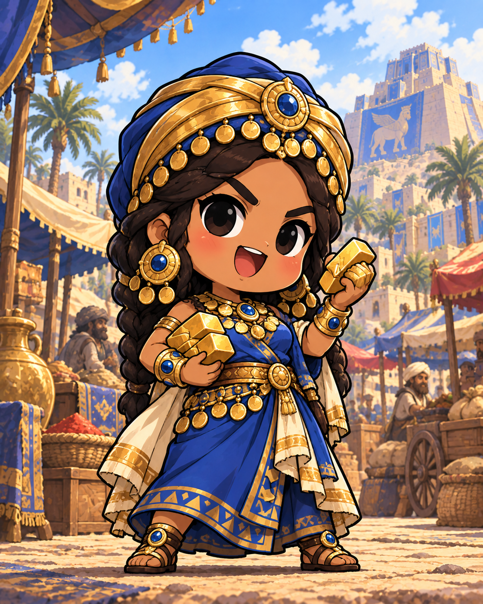
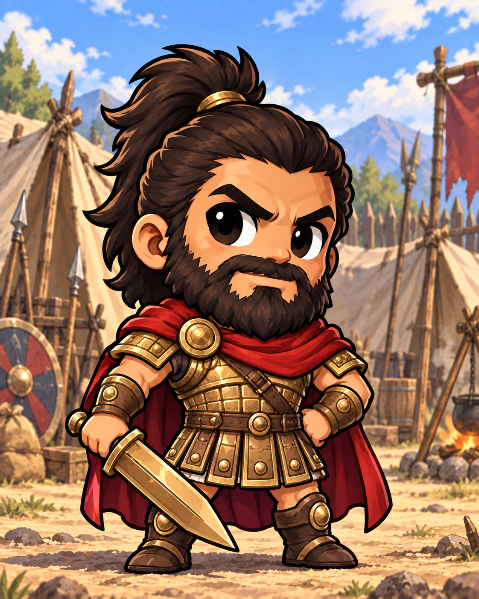
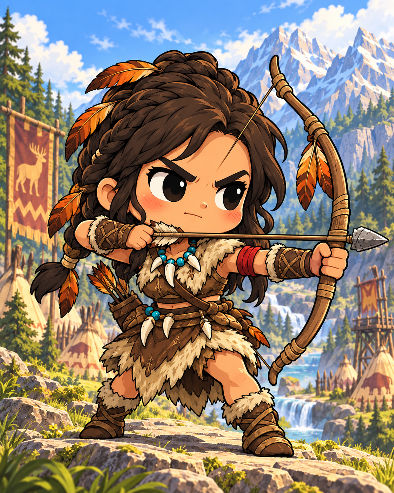
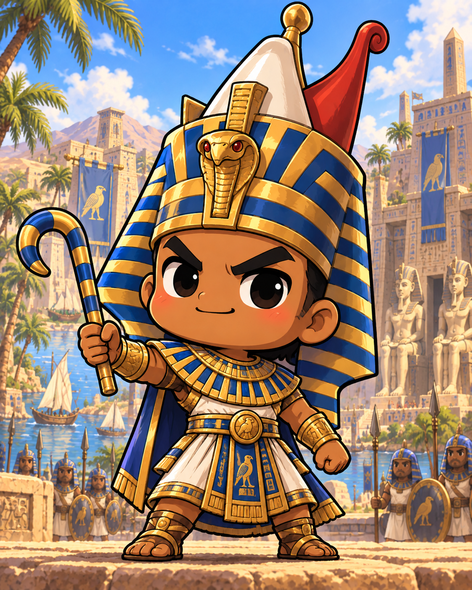
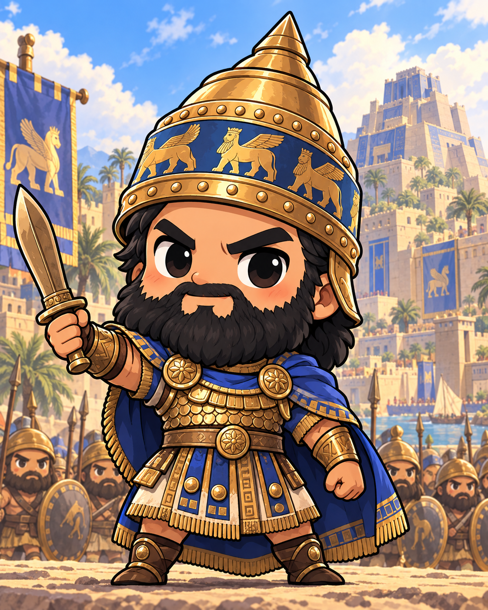

March of Epochs | origins
People art batch. Existing in-game card structure and rarity presentation are preserved. Prompts and integration metadata: manifest.json.

Tribal ElderCommon | leader | replaced

Merchant PrinceUncommon | leader | replaced

Veteran CommanderCommon | general | replaced

Hunter CaptainUncommon | general | replaced

NarmerRare | leader | replaced

Sargon of AkkadEpic | general | replaced